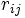
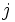
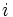
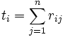
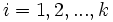
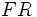
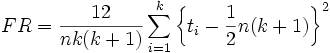
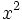
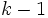

Die Vorgehensweise unten basiert auf NAG-Algorithmen.
Die Scores in jeder Spalte sind nach Rang sortiert, wobei

den Rang innerhalb des Blocks
der Beobachtung in der Behandlung
bezeichnet. Die durchschnittlichen Ränge werden zugeordnet, um die Werte zu verbinden.
für

wird berechnet mit
Das Signifikanzniveau wird mit der

-Verteilung mit
Freiheitsgraden verglichen, wobei k die Gesamtanzahl der Stichproben ist.Weitere Einzelheiten zu dem Algorithmus finden Sie unter nag_friedman_test (g08aec).